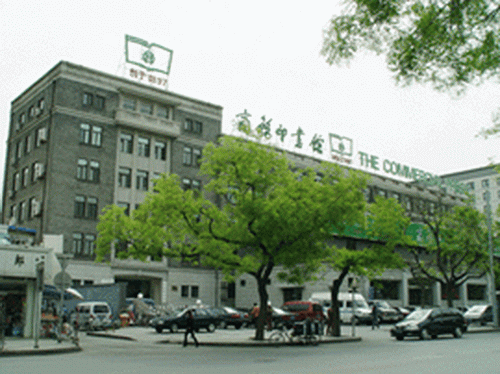
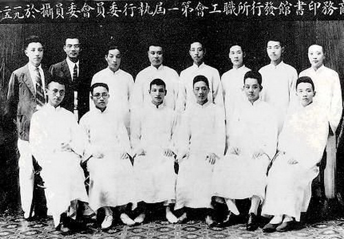

商务印书馆

商务印书馆发行所职工会第一届执行委员会委员合影
商务印书馆内景
商务印书馆位于北京王府井大街36号，1897年2月创立于上海，它的创立标志着中国现代出版业的开始。极盛时期，曾创造了中国现代出版业的诸多第一，铸造了商务印书馆的这个最著名的品牌。从这座文化重镇里，走出了一大批杰出人物，其中周建人、郑振铎、叶圣陶都是民进的成员。他们光辉的名字都写在了商务的史册上。商务印书馆现隶属于新组建的中国出版集团，正以崭新的姿态迎接我国文化体制改革和出版体制创新的机遇和挑战。